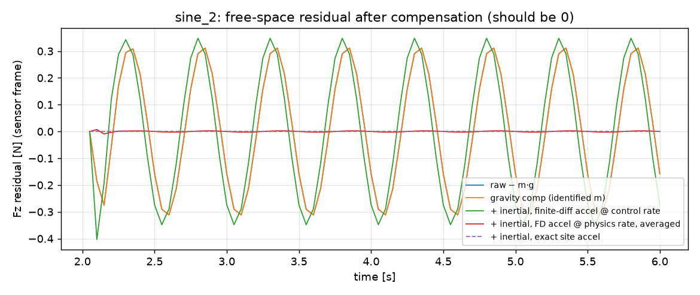
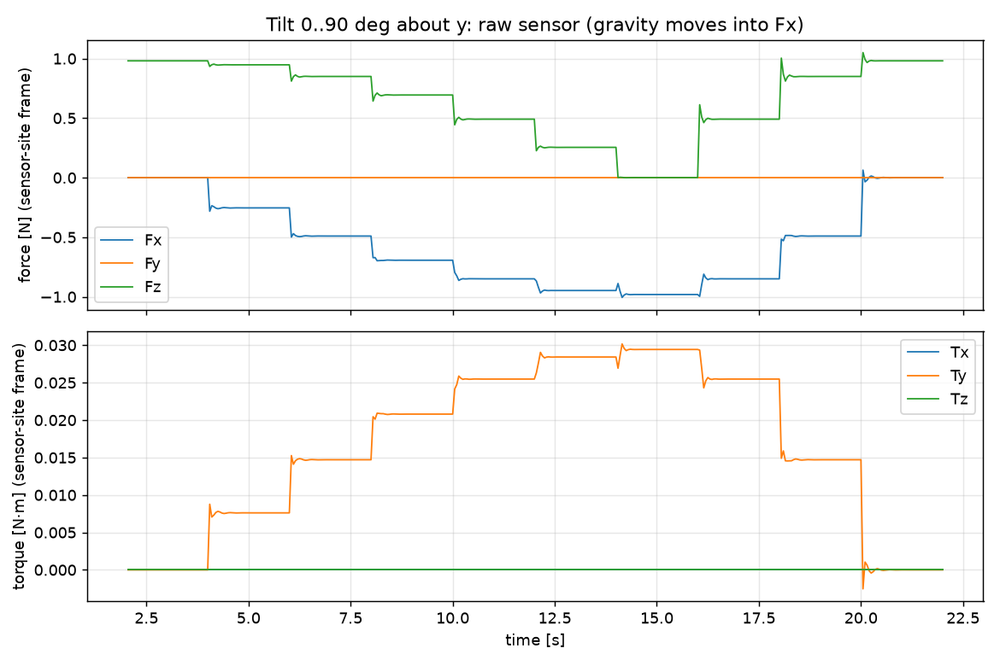
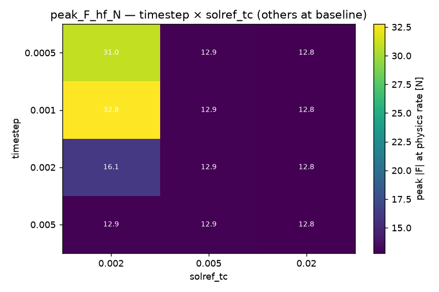
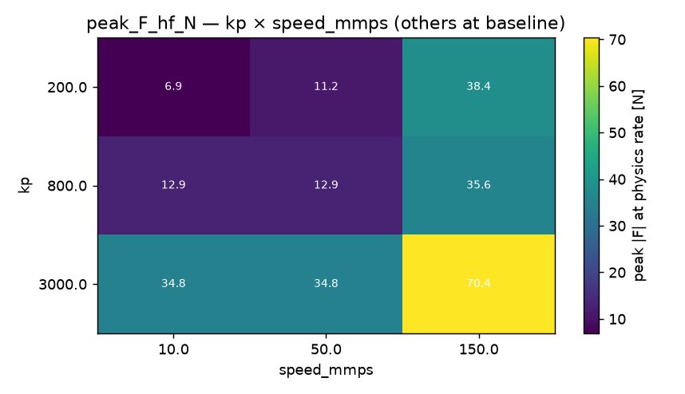
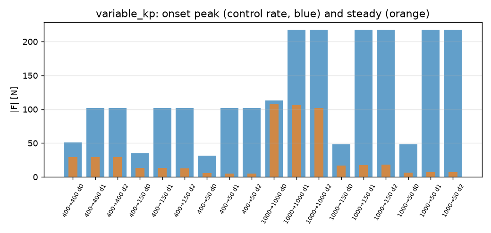
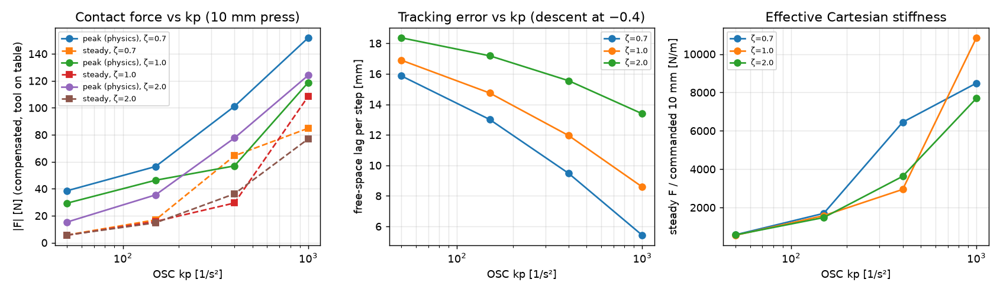

What a simulated wrist force/torque sensor actually measures during peg-in-hole and contact tasks, what contaminates it, and whether a small network can use it. Stage 0 is the sensing work (M0–M6); Stage 1 trains a policy on it. Every number, plot and video below came from a fresh run of the repo on this machine.
Stage 0 · M1, M4, M6
The robots doing the task
Stage 0 uses two setups. Track A is a bare MuJoCo 3-axis gantry: a 0.1 kg, 20 mm square peg on position-actuator springs (kp 800 N/m) above a chamferless square hole with 0.5 mm clearance per side. It isolates the physics of the sensor. Track B is robosuite's Panda under its operational-space controller (OSC), running the same measurements on a real arm model: Wipe, NutAssemblyRound, and a custom single-arm PegInHole env built for this repo.
Track A, aligned (0 mm). The peg drops through the 0.5 mm clearance, touches no wall, and bottoms out at 40 mm depth.Track A, 4 mm offset. The peg lands on the rim and jams. The spring keeps winding up while the target keeps descending: steady −44.9 N.
Panda on Wipe, press and slide. Descends until compensated |F| > 1 N, holds 10 mm below the contact height, slides along +y.NutAssemblyRound, scripted. Grasp → lift → transport → lower onto the peg → release (7/8 succeed).Custom PegInHole, kp 150, 4 mm offset. Peg welded to the flange lands on the rim; the controller holds a 2 mm push.
Stage 0 · recorded episodes (PLAN §5 schema)
Speeds, forces and torques
Pick an episode. All charts share the time axis; hover one to read every channel at that instant. The force panel shows the key artifact of this whole stage: the physics-rate peak inside each 50 ms control interval versus the control-rate reading a 20 Hz policy would see.
Read the gap between yellow and black. A contact impact is a 1–5 ms spike that falls between two 20 Hz samples. On the Panda the physics-rate peak is 1.7–2× the control-rate one, and up to 5.5× in the nut task. A policy at control rate sees the quasi-static wind-up, not the impact.
Stage 0 · M2
Gravity and inertia in the reading
The simulated sensor is exactly m·Rᵀ(a − g) plus contact. There is no noise, no bias, no sensor dynamics. Mass and centre of mass are identified by least squares from static poses (0.1 kg → kg). What decides whether compensation works is where the acceleration comes from. Residual RMS in free space, as % of m·g (log scale):

2 Hz sine, 10 mm. Finite-differencing the 20 Hz velocity is phase-lagged by one sample and makes things worse. Differencing at the 1 kHz physics rate and averaging per control step leaves 0.2 %.

Tilt 0→90°. The load's 0.981 N weight rotates from Fz into Fx. With the identified load it's removed to 0.006 N RMS.
Stage 0 · M3 · 864-run factorial
Which sim knobs move the force
A full factorial over timestep, integrator, cone, solref, noslip, stiffness and approach speed, all running the same 0.3 mm-offset insertion. Bars show each parameter's main effect: the mean range in the metric when only that parameter varies.

Peak |F| at physics rate, timestep × solref. Steady force is 12.9 N in every cell. MuJoCo clamps solref ≥ 2·dt, so the 94–99 N stiff impact exists only at dt ≤ 1 ms.

Stiffness × approach speed. Speed sets the spike, kp sets the plateau. Low kp does not protect against the impact.
solref and timestep move peak force by 16–25 N while moving the trajectory by < 0.05 mm. A policy trained on force from one solver config learns that config's artifacts. Chosen default for data: dt 1 ms, implicitfast, elliptic, solref (0.005, 1).
Stage 0 · M5 · Panda OSC
Controller stiffness vs contact force
robosuite's OSC kp is an acceleration gain, so the tool's stiffness is Λ·kp (Λ = task-space inertia, ≈ 10.5 kg here). This is the same 10 mm press and slide at four gains, damping ratio ζ = 1.

Switch to low stiffness on contact. 1000 → 50 at zero latency: −58 % observable peak, −94 % steady force, but the ~117 N physics-rate impact is untouched. One 50 ms step of latency doubles the peak.

The trade-off. Raising kp from 50 to 1000 halves the free-space lag and cuts settling time 3×, while raising steady contact force 20× and the onset peak 4×.
Stage 0 · closing
Stage 0 verdict
What the sensor is
The wrench the parent body applies to the child subtree, in the site frame. A hanging peg reads +m·g; under vertical acceleration it reads m(g + a_z).
robosuite's ee_force is exactly that raw sensordata. Its site's z axis points down, and the site is rotated 90° about z from the grip site (robot0_eef_quat). Using the grip-site frame swaps Fx and Fy.
robots[0].torques is None in 1.5.2; the applied torques are sim.data.ctrl[arm idx].
Preprocessing for a learner
Compensate at driver/physics rate, then average per control step. Re-identify the load after a grasp.
Keep the physics-rate buffer and summarise it per step (max |F|, impulse). Take contact labels from it, never from a control-rate contact query.
No low-pass before the peak features. The spikes are the signal.
Normalise by a fixed physical scale (50 N, 1 N·m). Log kp, ζ, dt and solref with every episode.
Traps found on the way
mj_objectAcceleration returns proper acceleration (+9.81 ẑ at rest).
mj_contactForce returns the force on geom2. Flip the sign when your body is geom1.
robosuite objects carry margin="0.001", a 1 mm collision skin that eats sub-mm clearance.
robosuite seeds from env.rng; np.random.seed does nothing.
A zero OSC rotation delta does not hold orientation (7–18° tilt in contact), and the OSC settles ~1.1 mm off its goal.
With 2 mm placement noise on a 0.5 mm clearance only 1/50 scripted inserts succeed, so the datasets use 0.5 mm.
Stage 1 · Tier 1 behaviour cloning
The task and the network BEYOND PLAN §7
The Track A gantry, with the hole moved to a random, hidden (x, y) each episode: N(0, 1.5 mm) per axis, clipped at ±4 mm, against 0.5 mm clearance. The peg always starts over the origin. Position alone cannot tell the policy which way the hole is. The only directional cue is the torque at a jam: at a 3 N jam the tip is 60 mm below the sensor, so an off-centre rim contact produces ~0.018 N·m of Tx/Ty whose sign points toward the hole.
ACT-lite topology
"ACT-lite" is ACT (Action Chunking with Transformers) without images and without the CVAE. The expert is deterministic, so a latent to model demonstration style is unnecessary.
Stage 1 · how it learns
Training principles and curves
Privileged teacher
A scripted expert reads the true hole position: descend at 50 mm/s; if |F| > 3 N and depth stalls, retract 3 mm, step ≤ 0.5 mm toward the hole, descend again. It succeeds 300/300, with ~2.4 jam recoveries per episode.
Student sees only sensors
The policy gets the 18-dim observation, never the hole position. To imitate the teacher it has to infer the correction direction from the torque sign at the jam.
Behaviour cloning
Supervised regression from an (H = 10)-step observation window to the expert's next K = 5 actions. 300 episodes, 270/30 train/val split by episode, ~9.8 k / 1.0 k windows.
Action chunking
Predicting 5 future steps forces the network to commit to a multi-step manoeuvre (retract → shift → descend) instead of a one-step average. Only the first action is executed; it re-plans every step.
Loss and optimiser
Masked L1 on z-scored chunks (steps past the episode end are masked). AdamW, lr 3e-4, weight decay 1e-4, cosine schedule, gradient clip 1.0, batch 256, 40 epochs. The checkpoint with the best validation loss is kept.
Ablation by zeroing
The no-force variants train on identical data with the 9 force channels set to zero. Same architecture, same seed. The only difference is the information.
Closed-loop evaluation
50 fresh episodes on seeds disjoint from training, run in the simulator. Validation loss barely separates the models; closed-loop success separates them 10×.
Cost
In this re-run on an RTX 3080: 12 s to train ACT-lite, 1 s for the MLP. Collecting the 300 expert episodes and evaluating a policy on 50 episodes take under a minute each.
Closed-loop results, 50 unseen episodes
With force . Same network with the force channels zeroed: . Without a direction signal the policy still learns to retract at a jam (from the stalled velocity and its own previous action), but it can't tell which way to move, so it retracts about times per episode.
This is a fresh re-run, and GPU training isn't bit-deterministic, so a few counts differ from docs/FINDINGS.md: no-force 7/50 (was 5/50), MLP + force 43/50 (was 45/50), ACT-lite at σ = 3 mm 49/50 (was 50/50), MLP at σ = 3 mm 31/50 (was 28/50). The conclusions don't change.
Stage 1 · same hidden hole, four controllers
Untrained vs trained network
Each video is one episode with the same hidden hole, run by four controllers side by side: untrained ACT-lite (random weights, same normalisation), trained without force, trained with force, and the privileged expert. Each tile shows a 3D close-up (hole walls translucent), a to-scale top-down schematic in mm (grey = hole walls, green + = hole centre, blue = peg and its path), and a live strip of compensated force [N] and torque [N·m]. Playback is real time at 20 fps; each tile holds its final frame after its episode ends.
Top left: untrained · top right: trained, no force · bottom left: trained, with force · bottom right: expert.
Stage 1b · sensor-noise floor
How much sensor noise the policy tolerates
Gaussian noise is added to the raw sensor at every 1 kHz physics step, before compensation. Force noise is 20× the torque value, in N. At each level: 300 noisy expert episodes → train → evaluate at that noise. The noise-free Stage 1 policy is also evaluated at every level.
Training on noise is what buys robustness. The policy trained at each level holds up to σ = 0.02 N·m, the size of the signal itself: compensation averages 50 samples per step (σ/√50) and the network integrates 10 steps. The noise-free policy drops to 68 % at 0.01 and 4 % at 0.02 N·m, and fails the opposite way: it stops retracting (0.7 retracts per episode), because its jam detector was fit to clean max-|F| summaries that noise inflates. At σ = 0.05 N·m (2.8× the signal) even the noise-trained policy falls to 38 % and dithers.
Re-run vs docs/FINDINGS.md: noise-free policy at 0.01 N·m 68 % (was 82 %); noise-trained at 0.05 N·m 38 % (was 40 %). Every other cell matches.
Plan status
What's left
Done
PLAN.md Stage 0: M0–M6 plus the stretch PegInHole env, 14 tests green, all artifacts reproduced for this report.
Stage 1 Tier 1 BC (ACT-lite vs MLP, force vs no force) and the Stage 1b noise sweep, both started ahead of the plan.
Open
The same BC experiment on the arm PegInHole, where the policy must also close the ~1 mm OSC error and hold orientation itself.
Harder variants: timestep/solref randomisation; DAgger if success drops.
Rotational-inertia terms in compensation (2 N·m torque spikes when the gripper re-orients).
Converter from the §5 episodes to LeRobot / robomimic HDF5 (PLAN §9).
Stages 2–4: force-fusion policies, then SmolVLA / openpi LoRA on LIBERO.
Docs drift: CLAUDE.md still says "Stage 0 only"; PLAN.md has no Stage 1 section.